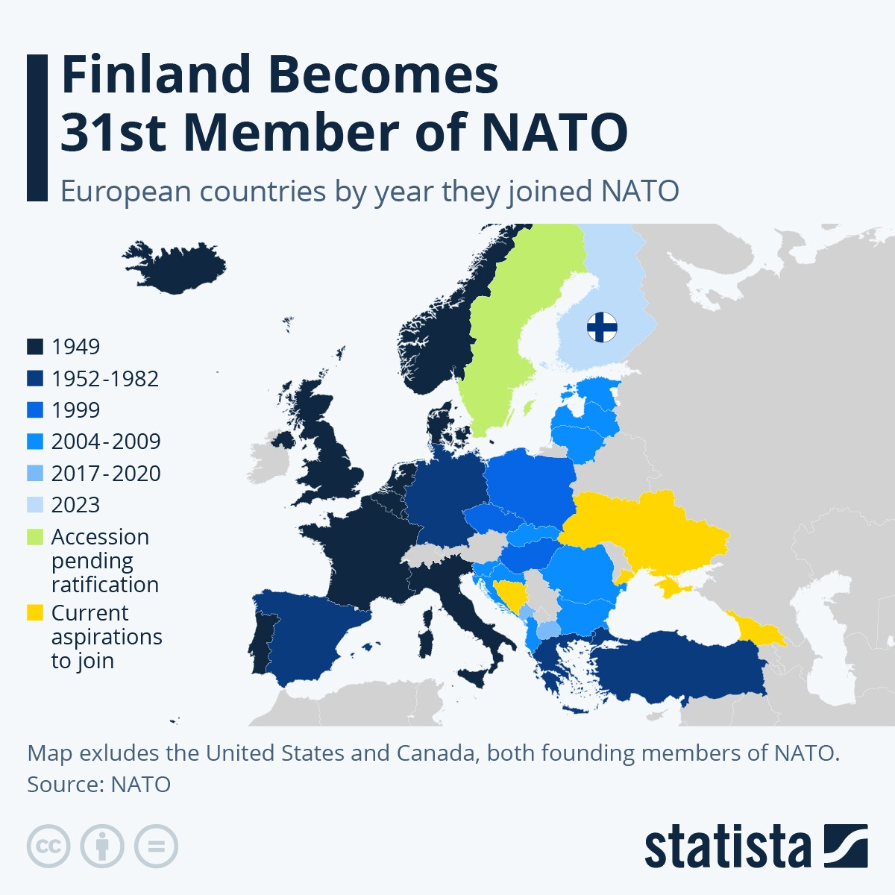
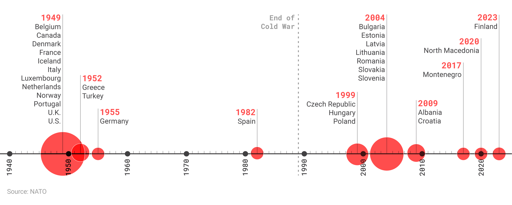

Leggere
- Di Luca D’Auria - articolo di Visione D’Auria, L. (2024, March). “La tua loquela ti fa manifesto”: La mirabilia del linguaggio tra sturm und drang e la morte di Dio. Visione un altro sguardo sul mondo, XI, 178–184.
Il linguaggio è un fatto performativo, (…) parlare (e scrivere) è molto di più che dire qualcosa; esprimersi con il linguaggio significa “fare” nel senso più concreto e materiale del termine. (…) Il linguaggio colora, deforma, produce la realtà.
Anche il linguaggio è sotto attacco a causa di due istanze uguali e contrapposte: 1. la prima devianza (alimentata dal mondo social) asseconda il volto piu aggressivo, irrispettoso e volgare; 2. la seconda devianza (“politicamente corretto”) formalista e fintamente inclusiva, apparentemente “buonista” e grondante di pseudo-etica non fa altro che giocare una partita contrpposta e ugualmente spregiudicata e antiestetica.
“La tua loquela ti fa manifesto” dice Farinata degli Uberti a Dante (Canto X dell’Inferno), cosí identificando l linguaggio come un elemento determinante per comprendere le origini e il pensiero del proprio interlocutore. In effetti, il linguaggio, proprio per le sue capacità performative, è, al contempo, uno strumento divisivo perchè, nel momento in cui e’ in grado di categorizzare è anche capace di di separare. (…) Da Aristotele in poi, la scienza (anche in senso generale di conoscenza) vive, appunto, di categorie e categorie anche linguistiche che devono distinguere e correttamente individuare le caratteristiche ontologiche di ciò di cui si parla.
- Alessandro Mangia, costituzionalista - articolo de La Verità del 13 maggio 2024 Su Astrazeneca indaghino le Camere
In UE (dal 2016) c’e’ una triplica classificazione delle autorizzazioni alla messa in commercio di un farmaco:
- standard
- di emergenza
- condizionata (le fasi sperimentali sono in parallelo e non in sequenza), ergo richiede meno tempo della standard –> tu non sai gli effetti a medio/lungo termine
Il Consiglio di Stato nell’ottobre 2021 (CdS Sez. III 7045/2021) si e’ espresso a favore di obbligo vaccinale pur con una AUTORIZZAZIONE CONDIZIONATA! Ma tale autorizzazione può stare alla base della messa in circolazione MA NON DELL’OBBLIGO/INDUZIONE ALLA VACCINAZIONE! Infatti fornisce un accertamento provvisorio, instabile e incompleto. L’obbligo vaccinale ha dei prerequisiti tra cui l’autorizzazione standard. Però il CdS ha reso inattacabili coloro che hanno autorizzato e somministrato questo vaccino.
Che valore ha il consenso informato sottoscritto al momento di una vaccinazione obbligatoria (medici, insegnanti, poliziotti, ecc.)? E’ vero, non ci nascondevano nulla (c’era scritto che gli effetti a medio/lungo termine non erano noti), ma se fai firmare tale documento a chi è stato obbligato che consenso è? Questo e’ classico vizio del consenso…
Ora quell’autorizzazione temporanea e incompleta è stata revocato su richiesta del produttore che ha ritirato il farmaco….
Guardare
- …
Ascoltare
- …
Ricordare
- Benjamin Abelow, storico americano - intervista de La Verità del 21 maggio 2024 Putin non è il nuovo Hitler o Stalin. Ha reagito alla minaccia degli USA
Gia nel 1997, 50 tra i piu importanti esperti di politica estera delgi Stati niti inviarono una lettera pubblica al presidente Bill Clinton che lo avvertiva che l’espansione della Nato sarebbe stata un errore di politica espera di “proporzioni storiche”.
 
- [Long read!] Christopher McCallion, Assessing realist and liberal explanations for the Russo-Ukrainian war
By focusing on factors like the balance of power and the security dilemma, the realist explanation for the Russo-Ukrainian War emphasizes Russian security concerns in the face of NATO expansion and Western-sponsored regime change. The dominant liberal narratives regarding the causes of the war are that Russian President Vladimir Putin has always been intent on reincorporating Ukraine into Russia and/or that the democratic example set by post-Maidan Ukraine would threaten President Putin’s own autocratic rule at home. Neither of these explanations stand up to scrutiny (!)
For decades, a long list of policymakers, diplomats, and scholars warned against Western encroachment on Russia’s borders and cautioned that a crisis like the current war could erupt due to continued NATO enlargement. These predictions are consistent with realist theory and the explanations for the war offered by realists.
Liberal international relations theory encourages a crusading, messianic, and highly militarized foreign policy that consistently produces outcomes inimical to U.S. interests. Realist IR theory offers a better framework through which to understand international politics and encourages a more prudent foreign policy that defends fundamental U.S. security interests while avoiding unnecessary conflicts with other powers.
Matthew Mpoke Bigg, reporter - articolo de NY Times del 13 Aprile, 2022 A history of the tensions between Ukraine and Russia
- 1918 - indipendenza Ucraina dalla Russia, poi rovesciata
- 1921 - fondata Ukrainian Soviet Socialist Republic
- 1932-33 - famine per via di Stalin
- 1939-44 - The Soviet Union annexes what is now western Ukraine from Poland and Romania. Later, Nazi Germany and the Axis powers invade the Soviet Union and occupy Ukraine, which suffers enormous devastation.
- 1991 - indipendenza Ucraina dalla Russia, in un referendum. Ukraine begins a transition to a market economy, and comes into possession of a significant stockpile of nuclear weapons that had belonged to the Soviet Union.
- 1994 — Under the Budapest Memorandum, Ukraine gives up its nuclear arsenal in exchange for a commitment from Moscow “to respect the independence and sovereignty and the existing borders of Ukraine.”
- 2014 - Pres V. Yanukovych (vicino a Russia) spodestato - con aiuto USA? (100 persone uccise nelle proteste in piazza “Maidan”) –> interim gov pro-west
- 2014 annessione Russa della Crimea
- 2014 ichiarazione indipendenza di Donetsk People’s Republic and Luhansk People’s Republic che dichiarano guerra all’Ucraina
- 2014 and 2015 — Russia, Ukraine, France and Germany sign a series of cease-fire agreements known as the Minsk Accords. Many view these accords as ambiguous
- 2019 - Elezione Zelensky con la promessa di pace con la russia e rientro del Donbass
- 2021-22 - Putin chiede garanzie di sicurezza e assicurazione che la NATO non accogliera l’Ucrainae che l’alleanza ritiri le basi che ha messo nei paesi annessi dopo il 1997
fuori dall’Ucraina NATO - former soviet states rel
- 1991 - russia traumtized by the disintegration of the Soviet Union, the loss of one-third of its former territory and half of its population. In an instant, the USSR disappeared, and Russia found itself much weaker and more vulnerable to rival great powers.
- 1993 - attempted October coup in Moscow in 1993
- 1994 - 1a guerra cecena Russian assistance to the breakaway Republic of Abkhazia in the south Caucasus
- 1997 - The three Visegrad countries (Estonia, Latvia and Lithuania) were duly invited to join Nato at the 1997 Madrid Summit, joining in 1999. Slovakia was forced to wait until 2004.
- May 14 1997 - the Founding Act on Mutual Relations, Cooperation and Security between NATO and the Russian Federation, was also signed at the 1997 Madrid Summit alongside the enlargement invitations. As the second formal agreement of the post-Cold War era between Russia and Nato, the act confirms that “Nato and Russia do not consider each other as adversaries”, and that Nato transformation is “a process that will continue”.
- 1997 - 50 prominent foreign policy experts signed an open letter to Clinton, saying, “We believe that the current U.S. led effort to expand NATO … is a policy error of historic proportions” that would “unsettle European stability.”
- 2008 - In 2008, Burns, then the American ambassador to Moscow, wrote to Secretary of State Condoleezza Rice: “Ukrainian entry into NATO is the brightest of all redlines for the Russian elite (not just Putin). In more than two and a half years of conversations with key Russian players, (…), I have yet to find anyone who views Ukraine in NATO as anything other than a direct challenge to Russian interests.”